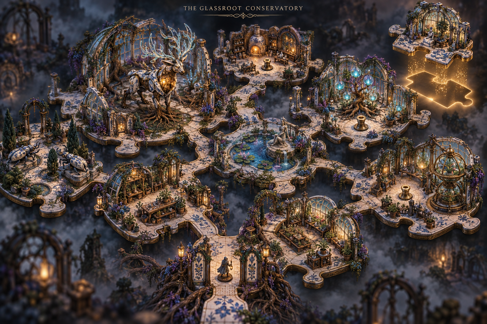
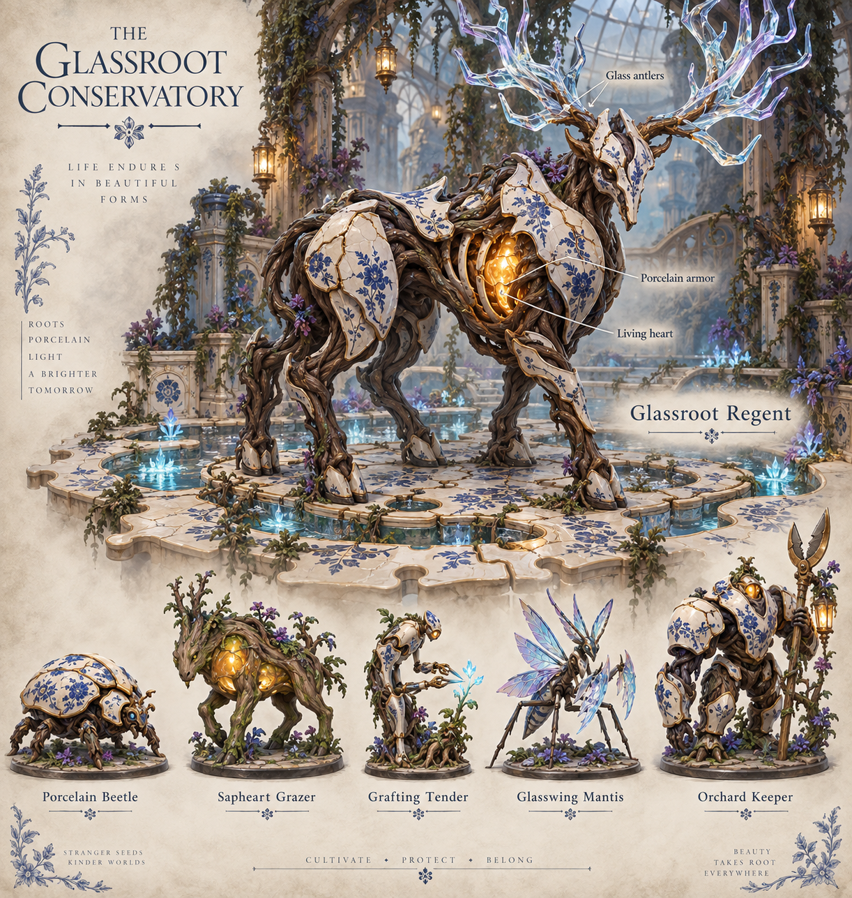
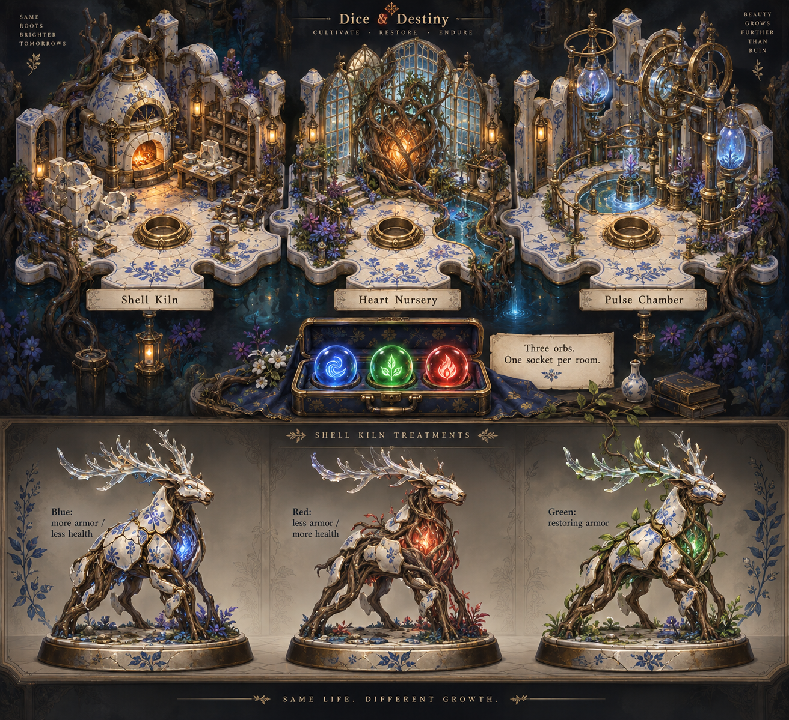

Glassroot Conservatory — Concept Gallery
The Glassroot Conservatory
Exploratory concept art for Dice & Destiny: a world discovered piece by piece, porcelain and living roots, and three orbs that shape the boss encounter. These images explore art direction; map layout and combat balance remain proposals.
Generation prompts · Built-in image generation
01 · The conservatory map

02 · The Glassroot Regent and its creatures

03 · The orb rooms and Shell Kiln treatments
